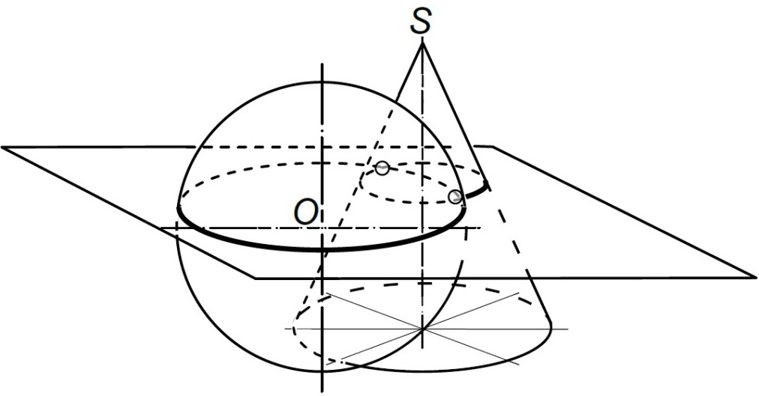
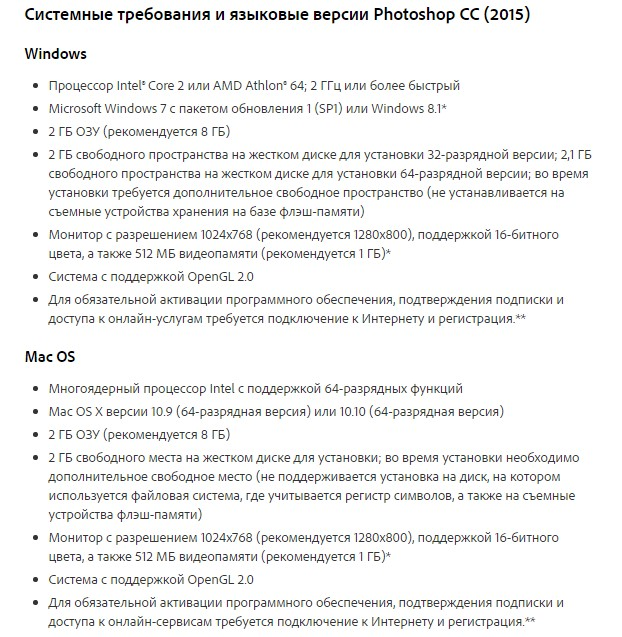

Добро пожаловать на электронно-обучающий модуль "Основы Photoshop"
На данном сайте представлены теоретические материалы, содержащие в себе основные знания по графическому редактору Photoshop.
Photoshop является самым популярным в мире графическим редактором. Если вы научитесь работать с ним профессионально, то вы станете весьма конкурентноспособным и высокооплачиваемым специалистом на современном рынке труда.

Здесь вам предлагается ознакомиться с основами фотошопа. Уроки для начинающих содержат подробное описание всех самых необходимых инструментов фотошопа. Это кисти, слои, трансформации, фильтры и многое другое. Вы научитесь использовать фотошоп для любых задач, будь то создание веб-дизайна или ретуширование фотографий.
Основная теоретическая часть взята с официального сайта Adobe
